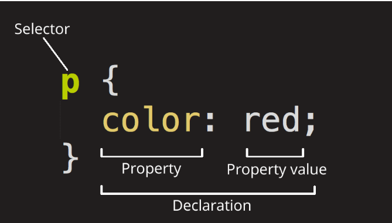
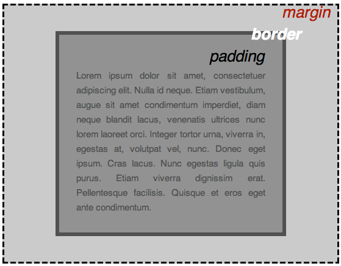

階層樣式表 (Cascading Stylesheets；CSS)
既非標準程式語言，也不是標記語言, 而是一種風格頁面語言（style sheet language）
<link rel="stylesheet" href="style.css" type="text/css">

| 選擇器名 | 範例 |
|---|---|
| 元素選擇器，有時也稱作標籤或類型選擇器（Element selector、tag or type selector) |
p控制 <p> |
| ID 選擇器（ID selector） |
#my-id
控制 <p id="my-id"> 或 <a id="my-id"> |
| Class 選擇器（Class selector） |
.my-class
控制 <p class="my-class"> 與 <a class="my-class"> |
| 屬性選擇器（Attribute selector） |
img[src]
控制 <img src="myimage.png"> 但不控制 <img> |
| 虛擬 class 選擇器（Pseudo-class selector） |
a:hover
控制 <a>, 但只有在滑鼠游標停留在連結上時 |

block「區塊元素」(div)
inline「行內元素」(span)
none(用以隱藏或顯示該元素)
inline-block
flex
……
(比較常見的例子就是把 li 元素修改成 inline，以便我們將該元素正確地呈現在水平的選單上)
#main { max-width: 600px; margin: 0 auto; }
(padding和border不會往外擴張)
* { -webkit-box-sizing: border-box; -moz-box-sizing: border-box; box-sizing: border-box; }
static 不會被特別定位
fixed "瀏覽器" 的 "相對位置"
relative 其 "原本該出現點" 的 "相對位置"
absolute 所處 "上層容器" 的 "相對位置"
sticky 同時具備 relative 和 fixed 特性 (滾動中固定導航欄)
img { float: right; (可用於實現文繞圖) margin: 0 0 1em 1em; }
clear: left宣告清空所有標示 float: left; 的元素
也可使用 min-width 與 max-width 來限制
響應式網頁設計(Responsive web design)的工具。讓我們用百分比寬度來做版面配置，然後當瀏覽器寬度小到無法容納側邊欄中的選單時，把版面配置顯示成一欄：
@media screen and (min-width:600px) { nav { float: left; width: 25%; } section { margin-left: 25%; } } @media screen and (max-width:599px) { nav li { display: inline; } }
困難的方法（使用 float）
.box { float: left; width: 200px; height: 100px; margin: 1em; } .after-box { clear: left; }
容易的方法（使用 inline-block）
.box2 { display: inline-block; width: 200px; height: 100px; margin: 1em; }
vertical-align 會影響到 inline-block 元素，你可能會把它的值設定為 top。
你需要設定每一欄的寬度。
在 HTML 原始碼中，如果元素之間有空白字元，那麼欄與欄之間會產生間隔。
nav { display: inline-block; vertical-align: top; width: 25%; } .column { display: inline-block; vertical-align: top; width: 75%; }
.three-column { padding: 1em; -moz-column-count: 3; -moz-column-gap: 1em; -webkit-column-count: 3; -webkit-column-gap: 1em; column-count: 3; column-gap: 1em; }
使用 Flexbox 配置複雜的版面
.container { display: flex; } .initial { (200but最小100) flex: initial; width: 200px; min-width: 100px; } .none { (200不變) flex: none; width: 200px; } .flex1 { (剩下的1/3) flex: 1; } .flex2 { (剩下的2/3) flex: 2; }
使用 Flexbox 配置居中的版面
.vertical-container { height: 300px; display: -webkit-flex; display: flex; align-items: center; justify-content: center; }